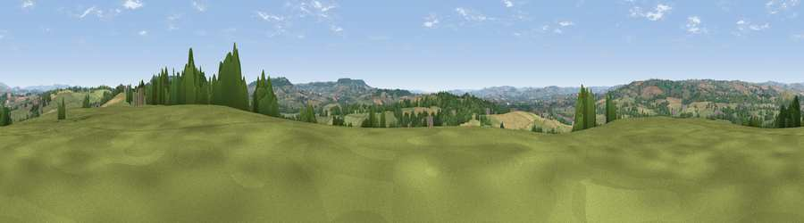

Viewpoint near Burlescombe
#15956 in England · top 30% of its area beats it · near BurlescombeWhere it is
The exact computed spot (ST 07025 15125). Click the marker for map links.
The view, rendered

A 360° render of this exact spot computed from the terrain model, tree cover and land cover — summer colours, afternoon light, calibrated against photographs of famous viewpoints. Real trees, hedges and buildings will differ in detail.
The panorama
Grey silhouette: terrain skyline in each direction (720 bearings, Earth curvature and refraction included). Dashed green: skyline with trees (+15 m) and buildings (+8 m) as obstacles. Blue strip: how far the ground is visible on each bearing.
Where the view opens
Wedge length = distance to the farthest visible ground on that bearing (vegetation-aware). Rings at 10, 25 and 50 km.
What fills the view
58% grassland · 20% woodland · 19% cropland · 2% built-up
Angular shares of the visible panorama (visual magnitude), not map area. Landscape diversity 0.46 (0–1 Shannon).
Key numbers
More beautiful places nearby
The staircase of upgrades: each row has a higher view potential than everything closer. Driving times are estimates from straight-line distance, calibrated against real road routing — check an actual route before setting out.
| Place | Direction | Drive | Score |
|---|---|---|---|
| Newmill Hill | WNW · 4 km | ~10 min | 59.6 |
| Viewpoint near Culmstock | SE · 5 km | ~11 min | 66.5 |
| Viewpoint near Sampford Arundel | ENE · 5 km | ~11 min | 68.8 |
| Viewpoint near Sampford Arundel | ENE · 5 km | ~11 min | 72.3 |
| Wellington Hill | ENE · 7 km | ~15 min | 74.9 |
| Viewpoint near Wiveliscombe | N · 11 km | ~20 min | 75.1 |
| Viewpoint near Pitminster | E · 13 km | ~23 min | 77.3 |
| Viewpoint near Bradninch | SW · 14 km | ~26 min | 77.7 |
50.92806, -3.32432 · source: screening · position refined by local search. Computed location — check access rights before visiting.